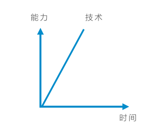
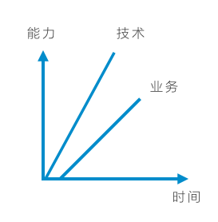
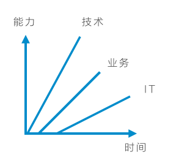
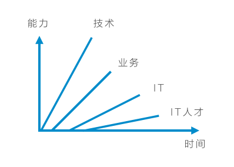
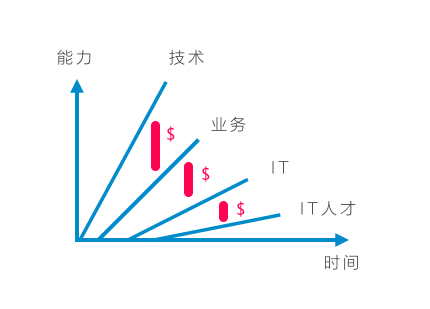

ThoughtWorks靠什么挣钱
尝试用最简单的方式解释ThoughtWorks的盈利模式。
简单来说，摩尔定律所揭示的是这样一条技术曲线：

而技术突破式创新所带来的商业创新往往后发，商业或业务能力的发展呈现出这样一条曲线：

作为业务发展和运营的支撑，IT能力的发展往往永远后置于商业或业务能力的发展，呈现出这样一条曲线：

随着时间的发展，业务潜力永远因为技术发展而产生上升空间、业务的发展又产生了对IT能力更高的需求，然而IT行业人员能力的发展曲线是这样的：

从事大量流程化工作的IT行业人员，没有达到IT能力要求所需要的成长速度，我们发现了3个巨大的Gap，这三大空间，就是ThoughtWorks的盈利空间：

这三大空间所代表的需求总得来说是：
- 业务越来越不能匹配突破性技术的需求；
- IT能力越来越不能匹配业务发展的需求；
- IT人才的成长越来越不能匹配IT能力发展的需求。
所有ThoughtWorks的业务都围绕在这三大需求中展开，这就是为什么我们：
- 不断投入和投资最新的颠覆性技术，应有在现有客户上，例如帮助传统企业在AR/VR上进行尝试，或者利用块链技术应用于传统金融领域；
- 不断帮助客户实现突破性的业务，例如当P2P金融还在萌芽期时，我们就已经帮助客户建立了第一个P2P业务平台；
- 不断招募成长斜率远高于业界水平的IT从业人员。
这也间接回答了很多问题：
- 为什么我们强调颠覆性的技术；
- 为什么我们要突破IT部门靠拢业务或战略部门；
- 为什么我们强调学习学习再学习，依靠最年轻的一代。
有趣的是，过去50年是这样，也许往后100年，这4条曲线依然存在，理解这4条曲线，便可理解ThoughtWorks经久不衰的奥秘。